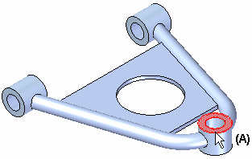
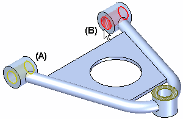

Analyze a model
Use the following finite element analysis process to simulate loading conditions on a model and determine its response. Follow the links to specific procedures and detailed information.
-
Open a part, sheet metal, or assembly model.
For frame models, refer to Analyze a structural frame model.
-
On PathFinder, click the Simulation tab
 to display the Simulation pane.Tip:
to display the Simulation pane.Tip:To learn how to use the Simulation pane, see:
-
Use the Simulation tab→Study group→New Study command
 to:
to:-
Set processing and results options in the Create Study (or Modify Study) dialog box.
Tip:Assembly models require connectors. For any type of study, you can add connectors automatically based on the mate relationships in the assembly by selecting the appropriate options in the Connector Options section of the Create Study dialog box. For more information, see Create connectors based on assembly relationships.
-
Use the Simulation tab→Geometry group→Define command
 to select the model geometry to analyze.
to select the model geometry to analyze.For this model type
And this mesh type
Select this geometry type
Part (.par)
Tetrahedral
Select a body.
Surface
Select a single continuous surface or face.
General Bodies
Select a united body.
To learn more, see Selecting united bodies for studies.
Sheet metal (.psm)
Tetrahedral
Select a body.
Surface
Select an existing mid-surface, or create a mid-surface using the Simulation tab→Geometry group→Mid-Surface command
 . Add it to the study using the Define command.
. Add it to the study using the Define command.To learn more, see
General Bodies
Select a body, surface, or design body. You can select united bodies from the Geometry node in the Simulation pane.
To learn more, see Selecting united bodies for studies.
Assembly (.asm)
Tetrahedral
Select one or more occurrences.
Tip:Click the Select All button
 on the command bar to include all of the visible (shown) active and inactive geometry
in the study.
on the command bar to include all of the visible (shown) active and inactive geometry
in the study.To learn more:
Surface
Select one or more surfaces or faces using the Simulation Geometry tab→Surface group→Mid-Surface command.
Mixed and General Bodies
Select occurrences, mid-surfaces, design bodies, or united bodies.
To learn more, see Assembly best practices for simulation and Preparing and selecting united bodies for studies.
Frame (.asm)
Beam
Select a frame feature.
-
Define a load as a boundary condition. Choose load commands based on the study type, file type (part, sheet metal, assembly), where you want to apply the load (entire bodies or selected entities), and how the model is intended to operate.
Note:A normal modes study does not use loads.
Example:Select faces to apply the load and specify load direction. These would typically be the faces which carry the load in the physical assembly (A).

-
Define a constraint as a boundary condition to specify how other entities are allowed to move in response to the applied load. For most study types, choose a command on the Simulation tab→Constraints group. Thermal studies use the commands in the Thermal Loads group as thermal constraints.
Example:Apply a fixed constraint to faces which are constrained from moving during the analysis. These would typically be faces which are bolted or fastened to other components in the physical assembly, such as faces (A) and (B).

-
For an assembly model, if connectors were not added to the model based on mate relationships during study creation, then use the commands on the Simulation tab→Connectors group to add connections between part faces by doing one of the following:
-
Mesh the model.
-
Use the Simulation tab→Mesh group→Mesh command to mesh the model initially or after updating the study.
-
Refine the mesh by applying mesh sizing controls to edges, surfaces, or bodies.
-
-
Choose the Simulation tab→Solve group→Solve command
 to run the analysis.
to run the analysis.-
The Simulation Progress dialog box shows the processing status.
-
If processing stops due to an error, the NX Nastran Solve Error dialog box is displayed.
When the processing is complete, the results are shown in the Simulation Results environment.
Example:
-
-
Now you can:
Modify and reuse study results.
Tip:Try the tutorials in Practice creating and using studies.
-
On the ribbon, click Close Simulation Results.

-
In the Teamcenter-managed environment, save the model and the Solid Edge Simulation analysis file (.ssd) to Teamcenter using the Simulation tab→Teamcenter group→Upload .ssd command.
-
The Upload dialog box indicates that both the model and the .ssd file are being uploaded.
-
Click the Perform Actions command to save the files to Teamcenter.
-
The analysis results files (.ssd) produced by Solid Edge Simulation can be quite large for a large assembly or a document with multiple solved simulations. While the results files are unloaded from memory when you save and close your document, you also can free memory while you continue to work in Solid Edge.
To free memory after closing the Simulation Results environment, in the Simulation pane, right-click the Results node and choose Unload Results.
Look for this indicator on the Simulation pane in PathFinder:  .
.
How do I
Create a studyDefine a load
Define a constraint
Mesh the model
Create assembly connectors using the Auto command
Create manual connections between faces or surfaces
Analyze a structural frame model
Look up more details
Create Study (or Modify Study) dialog boxSimulation Progress dialog box
NX Nastran Solve Error dialog box
Quick links
Reviewing the study statusModify and reuse analysis studies